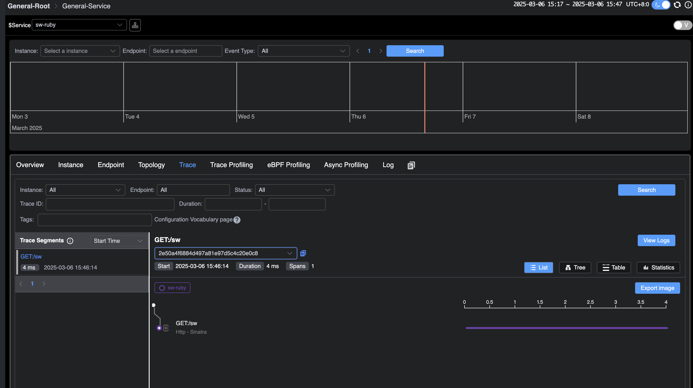

SkyWalking Ruby Quick Start and Principle Introduction
Background
Ruby is a dynamic, object-oriented programming language with concise and elegant syntax, supporting multiple programming paradigms, including object-oriented, functional, and metaprogramming. Leveraging its powerful metaprogramming capabilities, Ruby allows modifying the behavior of classes and objects at runtime. SkyWalking provides a Ruby gem to facilitate integration with Ruby projects, and this gem supports many out-of-the-box frameworks and gems.
This article is based on skywalking-ruby-v0.1. We will guide you on how to quickly integrate the skywalking-ruby project into Ruby projects and briefly introduce the implementation principle of SkyWalking Ruby’s auto-instrumentation plugins using redis-rb as an example.
The demonstration includes the following steps:
- Deploy SkyWalking: This involves setting up the SkyWalking backend and UI programs to enable you to see the final results.
- Integrate SkyWalking into Different Ruby Projects: This section explains how to integrate SkyWalking into different Ruby projects.
- Application Deployment: You will export environment variables and deploy the application to facilitate communication between your service and the SkyWalking backend.
- Visualization on SkyWalking UI: Finally, you will send requests and observe the results in the SkyWalking UI.
Deploy SkyWalking
Please download the SkyWalking APM program from the official SkyWalking website, and then you can start all the required services using the quick start script.
Next, you can access the address http://localhost:8080/. At this point, since no applications have been deployed, you will not see any data.
Integrate SkyWalking into Different Ruby Projects It is recommended to use Bundler to install and manage SkyWalking dependencies. Simply declare it in the Gemfile and run bundle install to complete the installation.
# Gemfile
source "https://rubygems.org"
gem "skywalking"
Integration in Rails Projects
For Rails projects, it is recommended to use the following command to automatically generate the configuration file:
bundle exec rails generate skywalking:start
This command will automatically generate a skywalking.rb file in the config/initializers directory, where you can
configure the startup parameters.
Integration in Sinatra Projects
For Sinatra projects, you need to manually call Skywalking.start when the application starts. For example:
require 'sinatra'
require 'skywalking'
Skywalking.start
get '/sw' do
"Hello SkyWalking!"
end
In the Gemfile, place skywalking after sinatra and use Bundler.require during initialization, or call
require 'skywalking' after the sinatra gem is loaded. Note that the skywalking gem needs to be placed after
other gems (such as redis, elasticsearch).
Application Deployment
Before starting the application deployment, you can change the service name of the current application in SkyWalking through environment variables. You can also modify its configuration, such as the server-side address. For more details, please refer to the documentation.
Here, we will change the current service name to sw-ruby.
Next, you can start the application. Here is an example using sinatra:
export SW_AGENT_SERVICE_NAME=sw-ruby
ruby sinatra.rb
Visualization on SkyWalking UI
Now, send requests to the application and observe the results in the SkyWalking UI.
After a few seconds, revisit the SkyWalking UI at http://localhost:8080. You will be able to see the deployed demo
service on the homepage.

Additionally, on the tracing page, you can see the request you just sent.

Plugin Implementation Mechanism
To understand the implementation mechanism of Ruby Agent’s auto-instrumentation plugins, it is essential to understand the concept
of the ancestor chain in Ruby. The ancestor chain is an ordered list, and in Ruby, each class or module has an ancestor
chain that includes all its parent classes and mixin modules (modules mixed in via include, prepend, or extend).
When Ruby looks up a method, it searches in the order of the ancestor chain until it finds the target method or throws a
NoMethodError.
class User
end
We have defined a User class, and its ancestor chain is as shown in the following figure:

Next, mix in a module using the prepend method:
module Dapper
def brave
"Hello from brave"
end
end
class User
prepend Dapper
end
p User.new.brave # => "Hello from brave"
prepend will insert at position 1 in the above figure. Ruby first looks for the brave method in the Dapper module, finds
it, and calls it. If the brave method is not found in Dapper, Ruby continues to search in the User class. If it is not
found in the User class, Ruby continues to search in Object, and so on.
Based on this mechanism, let’s briefly introduce how we instrument the redis-rb method. The following code is the target method to be instrumented:
# lib/redis/client.rb
class Redis
class Client < ::RedisClient
def call_v(command, &block)
super(command, &block)
rescue ::RedisClient::Error => error
Client.translate_error!(error)
end
end
end
Below is the core code for instrumentation:
module Skywalking
module Plugins
class Redis5 < PluginsManager::SWPlugin
module Redis5Intercept
def call_v(args, &block)
operation = args[0] rescue "UNKNOWN"
return super if operation == :auth
Tracing::ContextManager.new_exit_span(
operation: "Redis/#{operation.upcase}"
) do |span|
# Omitted handling of span
super(args, &block) # Call the original method
end
end
end
def install
::Redis::Client.prepend Redis5Intercept
end
end
end
end
Here, we define a Redis5Intercept module and prepend it to ::Redis::Client. According to Ruby’s method lookup mechanism,
when the call_v method of Redis::Client is called, Ruby will first execute the call_v method in Redis5Intercept. The
order of the ancestor chain is as follows:
Redis5Intercept -> Redis::Client -> ... (other parent classes and modules)
At the same time, in the call_v method of Redis5Intercept, super(args, &block) will find the next method with the same
name along the ancestor chain, which in this case is the original call_v method in Redis::Client, while passing the
original arguments and block.
Conclusion
This article explained the integration methods of SkyWalking Ruby in Ruby projects and briefly introduced the implementation mechanism of SkyWalking Ruby’s auto-instrumentation plugins.
Currently, the Ruby auto-instrumentation is in the early stages of development. In the future, we will continue to expand the functionality of SkyWalking Ruby and add support for more plugins. So, stay tuned!